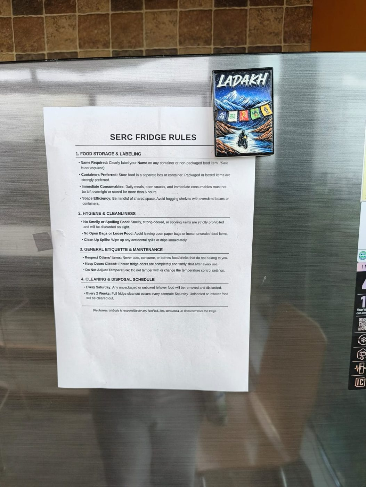

Case Study
Using Systems Thinking and System Design to Improve Access to Shared Resources in the Research Lab Commons (SERC × Precog)
| Project details | Complete the fields |
|---|---|
| Case study title | THE EMPTY DESK: MAKING SHARED LAB RESOURCES READABLE |
| Team / author(s) | Team The System Error: Gargi Saini (2025204036), Deepti Koranga (2025204033), Dhawal Pawanarkar (2025204005) |
| Course / institution | Systems Thinking and Design (PD2.405), IIIT Hyderabad |
| Date | 14 October 2026 |
| Course Faculty | Prof. Raman Saxena |
Two research labs, SERC and Precog, share the fifth floor of a campus building. About 100 students work there, with 84 desks and chairs, local GPUs, 12 lockers, 2 meeting rooms and one fridge, coffee machine and microwave. Students described desks that looked occupied but were empty, contention for GPU time, and food waste in the shared fridge. They also described generous, cooperative borrowing. The same resources produced both outcomes.
The team began with a question rather than a solution: “How do resource boundaries, claim persistence, uneven information and distributed responsibility turn nominal capacity into unequal usable access?” The team did not assume that adding more desks or GPUs would fix the problem. It first examined how claims, permissions, information and habits interact on the floor.

The team drew the system boundary around the shared resources (desks, GPU time, amenities, storage and meeting rooms) and the people who authorise or negotiate their use. Institute rules, cleaning, procurement and administration sit on the boundary as dependencies. Campus construction, admissions and research evaluation lie outside it. Sharing a location is not the same as sharing a resource. For example, the cafeteria space is shared but its appliances are not.
Stakeholders include seniors and incumbents, who hold desks and GPU slots and grant permission informally; juniors and newcomers, who must ask before using anything that looks free; faculty, who control funding and permissions (allocation tends to follow who paid); student POCs and the GPU manager, who keep the SERC tracker and act as brokers; and admin, supervisors and cleaning staff, who maintain the floor but never decide eligibility. No floor-wide allocation process exists, only local arrangements held together by courtesy.
The research combined stakeholder interviews, photographed notices and process tracing. It asked five questions: who can use each resource, how a claim begins and ends, how urgent needs are negotiated, who restores depleted capacity, and what happens when agreement fails. Accounts were coded by resource, actor, rule, workaround, escalation and change over time. First-hand experience, second-hand report and the team’s own interpretation were kept separate.
The team mapped a reinforcing loop (R1). When desk claims, signalled by names and belongings, persist without any common release condition, fewer desks are available to newcomers. Unmet demand then rises, which increases the pressure to secure a personal desk, so claims grow stronger over time. A balancing loop (B1) offers relief through negotiated temporary sharing. It works only when the holder is absent, reachable and willing, and when the requester feels able to ask. A junior’s hesitation weakens it: offered permission is not the same as felt permission.
Delays hide these loops: between a holder’s absence and the desk’s release, between a GPU reservation and its actual use, and between a minor problem and formal awareness of it. Status is spread across the SERC tracker, Precog’s Slack and names on desks, so every check becomes a person-to-person query. Problems therefore surface late and correction is blunt. In one case, coffee-machine access was withdrawn from all students, and the shared benefit was lost. Beneath these patterns sits a mental model: “a desk someone regularly uses is effectively theirs.” The system also has no feedback loop of its own. A junior who quietly gives up leaves no trace, and demand that disappears looks the same as demand that was met.
The team traced five mechanisms (M1–M5): claims persist, status is unreadable, access runs on asking, problems surface late and correction is blunt, and allocation follows history. It then ranked seven leverage points from shallow to deep, drawing on Meadows. Adding capacity helps at the margin but does nothing about idle-held desks. Posting stricter notices does not help if no one can see who holds what. A booking app alone would digitise the same opacity.
The team chose the chain LP3 → LP4 → LP5 as the core: a rule no one can see cannot be enforced, so visibility comes first, fair rules second, and a self-correcting review third. Underneath, the design aims at a goal shift (LP6) from “protect what my group funded” to “use idle capacity, with attribution”. Ownership is not removed.
The team proposes a low-tech bundle of five parts that work together. It is deliberately not an app: it uses paper cards, the existing GPU page and a shared sheet. Automated sensors and idle detection were explicitly left out of the recommendation.
| Mechanism | Intervention | Expected effect (predicted) |
|---|---|---|
| M2 status is unreadable | 1 · Claim Signals | Free capacity reads as free; fewer manual checks. |
| M1 claims persist | 2 · Default-Decay | Claims track actual use; less defensive reserving. |
| M3 access runs on asking | 4 · Stewards + ladder | Asking becomes cheaper and less personal. |
| M4 late, blunt correction | 3 · Proportionate Care | Misuse controlled; amenities stay open to all. |
| M5 allocation follows history | 5 · Termly Review | Allocation adapts to use before crises. |
The design deliberately keeps what already works: the ask-first courtesy norm, faculty authority, attribution of purchased equipment, and existing GPU quotas. Cleaning staff may report a recurring mess with a photo but never have to confront anyone. A conditional, student-run trial of the coffee machine is offered to faculty as a proposal, not as a rule change.
Before any deployment, the team tested the design analytically against eight scenarios based on situations the research had documented: a newcomer needing a desk, deadline week on the GPUs, a long run during planned travel, two legitimate users wanting one resource, a holder who renews without using, an unreachable holder, a cross-lab GPU request, and a maintenance failure. Each was walked through against five paper prototypes, such as the A5 desk claim card and the fridge care notice. These outcomes are reasoned predictions, not observed results.
Take the newcomer. Today they walk the bay reading names and jackets, ask a senior who knows who is away, and may be moved on from a claimed desk. With the intervention, a card marked FREE, or one with a “last here” date more than 7 days old, lets them sit for the day. They still ask neighbours first, and they join the steward’s queue for a desk of their own. The predicted outcome is being seated the same day without a broker. The open question is whether newcomers will actually sit at a stale-card desk.
For a proposed four-week pilot, the team defined ten evaluation criteria, each with a success signal and a failure signal. They include effective availability, newcomer access, continuity protection, coordination cost, predictability, flexibility, steward burden, trust and cooperation, system learning, and resistance to gaming. Proposed thresholds include newcomers seated within 2 days, fewer than 30% of desks marked Protected, and zero running jobs disturbed. These are targets; no pilot has been run and no results exist yet.
For each part of the design, the team traced how people might adapt to it and what that could cause. The failures rated likely already have precedents in today’s behaviour. Holders may tick “Protected” just to be safe, so signals lose their meaning. Weekly renewals without real use would keep the R1 spiral going. Everyone may declare a deadline during peak weeks. Unpaid stewards may drift away, and cases would slide back into WhatsApp. Risks rated possible include dummy GPU jobs, unlabelled food that makes misuse anonymous, stewards becoming new gatekeepers, and a review that simply ratifies the status quo.
No intervention was dropped just because a risk existed. Each received the smallest change that reduces its main failure mode (V1 → V2). A Protected card now needs an end date and a steward’s initials. A fixed “N days then reassign” rule became the tiered 7 / 21 / 5-day sequence. One broad steward became cross-lab pairs with a one-hour cap who decide only by written rule. The review got a fixed 45-minute agenda driven by log counts. The parameters themselves (7, 21, 5 days; 2 hours) are open questions that only a pilot can settle.
The case shows how Systems Thinking and System Design complement each other. Systems Thinking showed how persistent claims, scattered information, informal permission and late, blunt correction combine to make capacity that exists feel unavailable, without anyone intending that result. System Design turned those insights into a coordinated, low-cost intervention that can be prototyped, stress-tested and refined before any pilot. The goal is not to remove ownership or add an app, but to make the commons readable and give it a way to learn. As the team concluded: the system does not prevent access; it simply never informs the people who could enable it.